Inspect the original first, then compare the labelled and prediction views. Model arrows show proposed assignments, not verified ownership. Box coordinates and labels can overlap; open the image at full size and consult the JSON if needed.
Enter one row per case in review_sheet.csv. Record box as acceptable/corrected/uncertain; visible status as PRESENT/MISSING/UNKNOWN. For ownership, list D IDs as correct/wrong/uncertain for the specified person (or none); use notes for omissions and ambiguity. Leave status UNKNOWN when not visible.
Target person box is provisional. Saved model states: P1: helmet PRESENT, vest MISSING
Ground truth: G1: Helmet. Labels are dataset annotations, not verified completeness.
All detections: D1 Helmet 0.92 -> P1; D2 NoVest 0.62 -> P1
Open original full resolution · Boxes, confidence and association data
Target person box is provisional. Saved model states: P1: helmet PRESENT, vest UNKNOWN; P2: helmet UNKNOWN, vest UNKNOWN; P3: helmet PRESENT, vest UNKNOWN; P4: helmet UNKNOWN, vest UNKNOWN
Ground truth: G1: Vest, G2: Vest, G3: Helmet. Labels are dataset annotations, not verified completeness.
All detections: D1 Helmet 0.74 -> P1; D2 Helmet 0.64 -> P3; D3 Vest 0.48 -> P3; D4 Vest 0.32 -> P2; D5 Helmet 0.28 -> P2
Open original full resolution · Boxes, confidence and association data
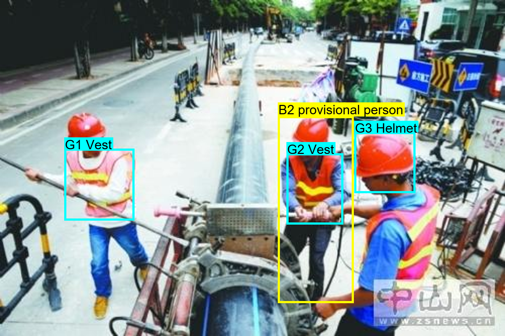
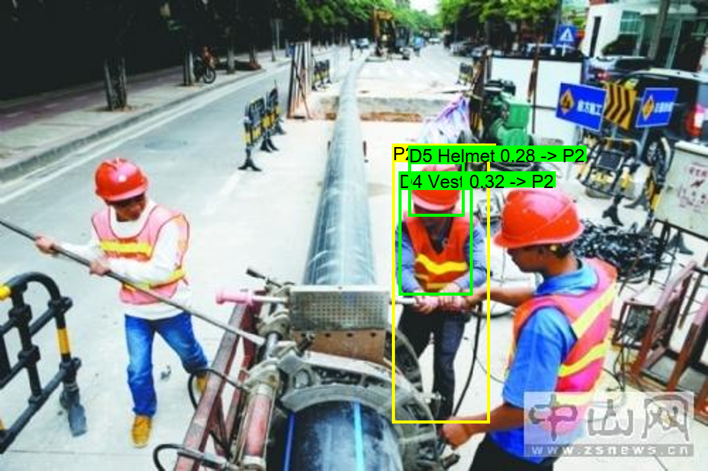
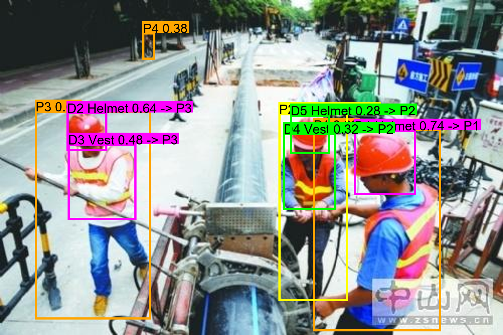
Target person box is provisional. Saved model states: P1: helmet PRESENT, vest UNKNOWN; P2: helmet UNKNOWN, vest UNKNOWN; P3: helmet PRESENT, vest UNKNOWN; P4: helmet UNKNOWN, vest UNKNOWN
Ground truth: G1: Vest, G2: Vest, G3: Helmet. Labels are dataset annotations, not verified completeness.
All detections: D1 Helmet 0.74 -> P1; D2 Helmet 0.64 -> P3; D3 Vest 0.48 -> P3; D4 Vest 0.32 -> P2; D5 Helmet 0.28 -> P2
Open original full resolution · Boxes, confidence and association data
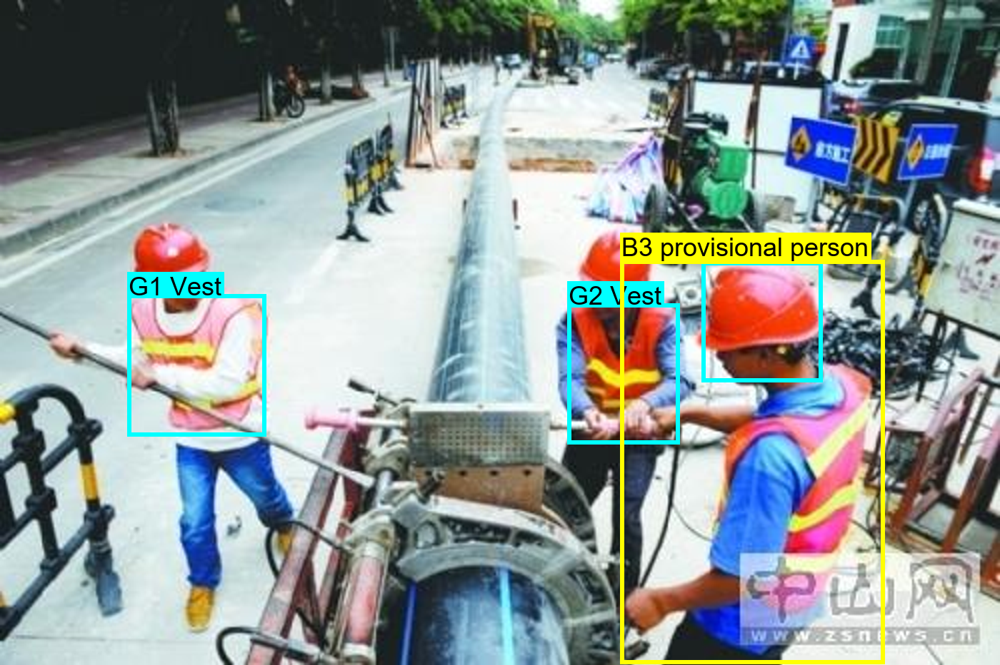
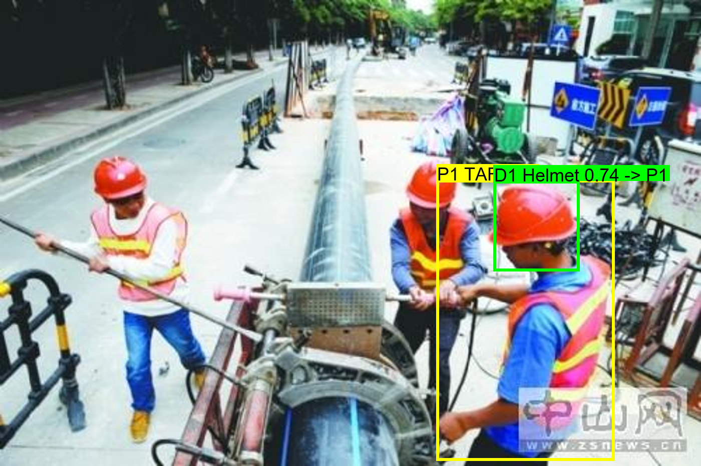
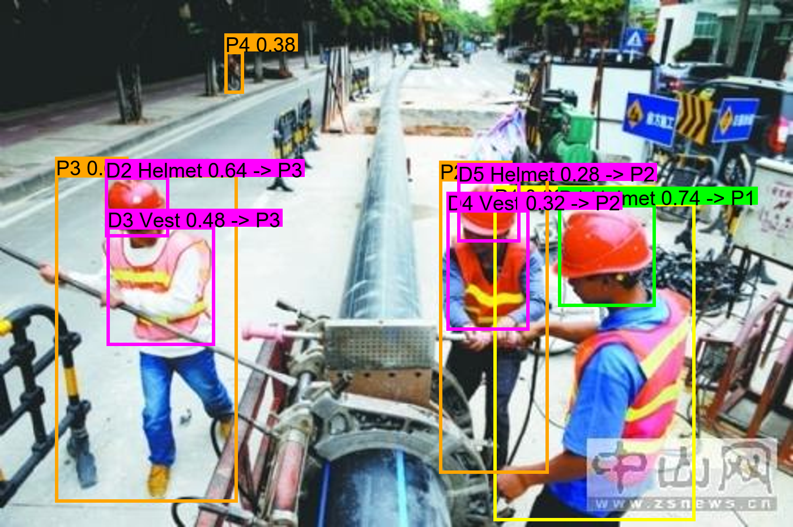
Target person box is provisional. Saved model states: P1: helmet MISSING, vest UNKNOWN; P2: helmet UNKNOWN, vest UNKNOWN; P3: helmet UNKNOWN, vest UNKNOWN; P4: helmet UNKNOWN, vest UNKNOWN; P5: helmet UNKNOWN, vest UNKNOWN; P6: helmet PRESENT, vest UNKNOWN; P7: helmet UNKNOWN, vest UNKNOWN; P8: helmet UNKNOWN, vest UNKNOWN; P9: helmet UNKNOWN, vest UNKNOWN
Ground truth: G1: NoVest, G2: NoVest, G3: NoHelmet, G4: Helmet. Labels are dataset annotations, not verified completeness.
All detections: D1 NoHelmet 0.60 -> P1; D2 Helmet 0.50 -> P6; D3 NoHelmet 0.47 -> P2; D4 NoVest 0.25 -> P2
Open original full resolution · Boxes, confidence and association data
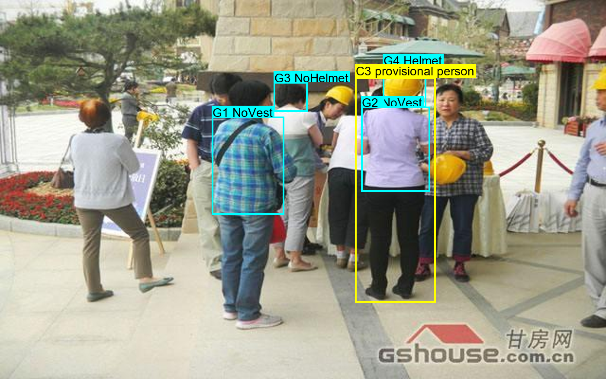
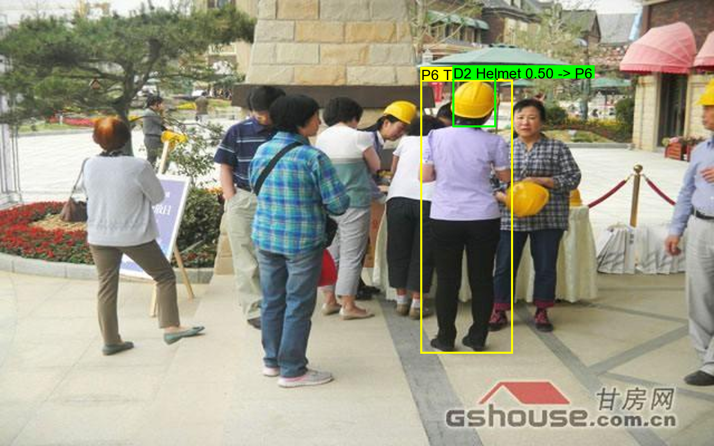
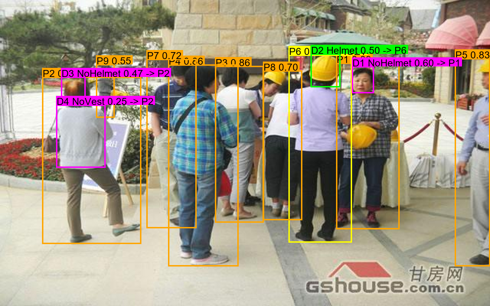
Target person box is provisional. Saved model states: P1: helmet UNKNOWN, vest UNKNOWN; P2: helmet PRESENT, vest UNKNOWN; P3: helmet UNKNOWN, vest UNKNOWN; P4: helmet UNKNOWN, vest UNKNOWN; P5: helmet UNKNOWN, vest UNKNOWN; P6: helmet PRESENT, vest UNKNOWN; P7: helmet UNKNOWN, vest UNKNOWN; P8: helmet UNKNOWN, vest UNKNOWN; P9: helmet UNKNOWN, vest UNKNOWN
Ground truth: G1: Helmet, G2: Helmet, G3: Helmet. Labels are dataset annotations, not verified completeness.
All detections: D1 Helmet 0.66 -> P2; D2 Helmet 0.52 -> P6; D3 Helmet 0.48 -> P5; D4 Helmet 0.41 -> P8; D5 NoVest 0.34 -> P2; D6 Helmet 0.33 -> P3; D7 Helmet 0.31 -> P1; D8 Helmet 0.29 -> P4
Open original full resolution · Boxes, confidence and association data
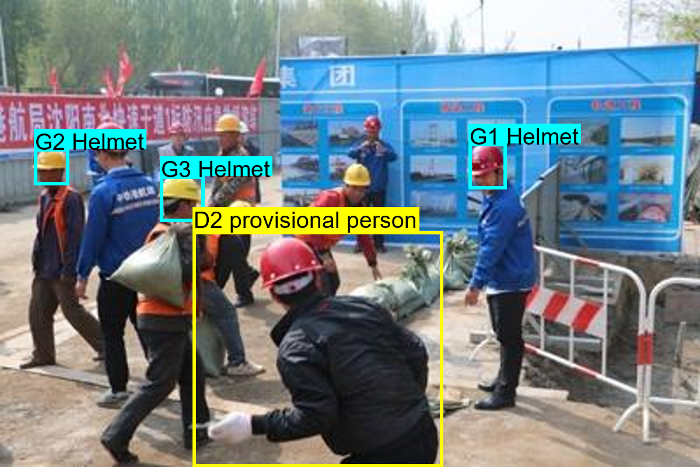
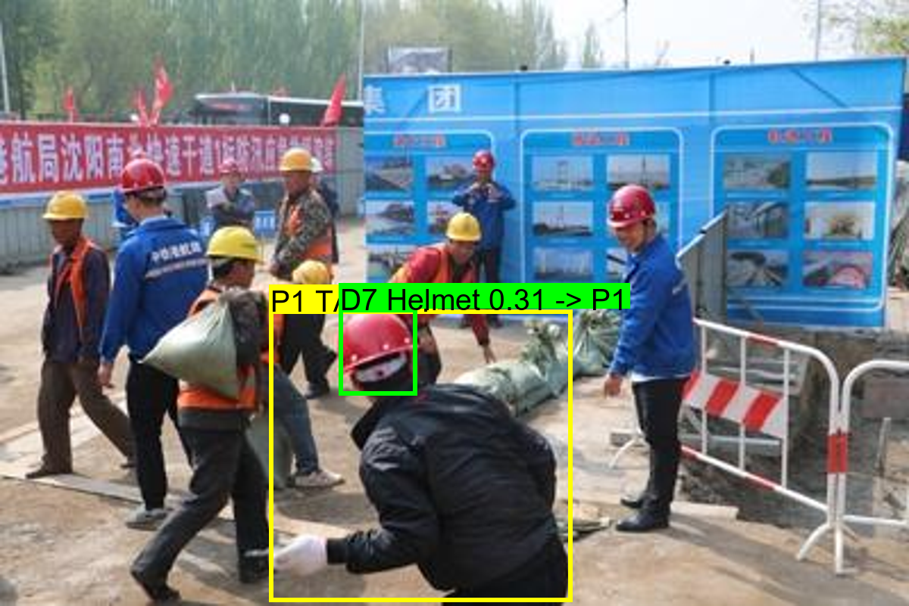
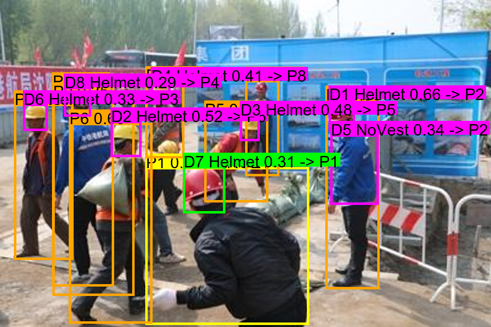